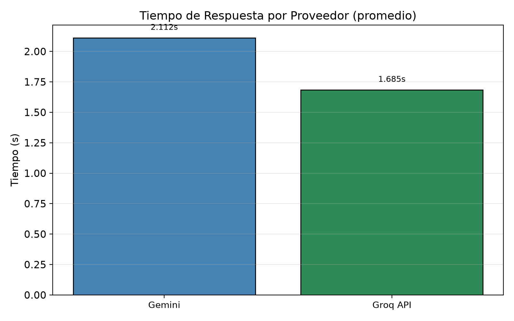
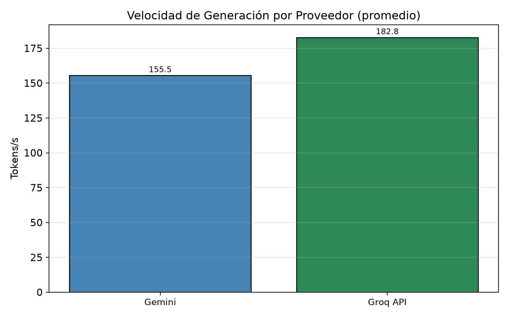
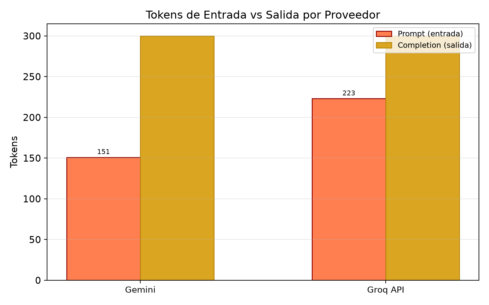
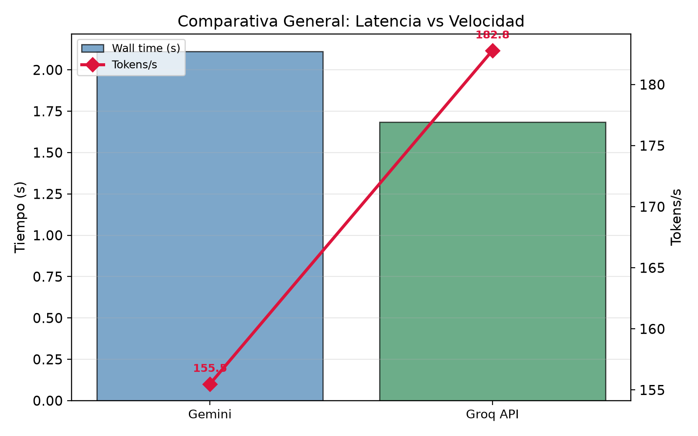
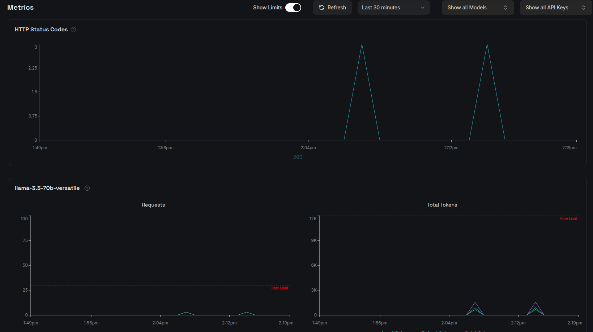
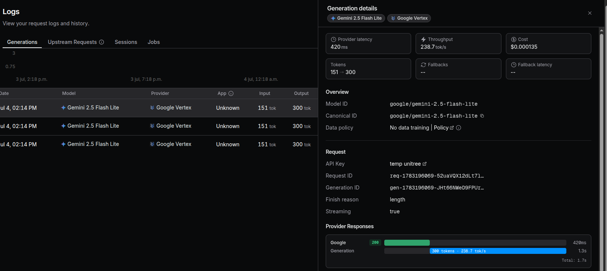

Práctica 5: Chatbot Híbrido con Ollama y APIs Externas
Extensión del chatbot para conversar con modelos locales (Ollama) y remotos (Groq, OpenRouter) mediante APIs externas
Resultados de la batería de pruebas
Se envió el mismo prompt a los tres proveedores con parámetros idénticos,
ejecutando 3 repeticiones por proveedor (9 corridas en total)
mediante test_hybrid_battery.py.
Prompt utilizado
Explica qué es la odometría diferencial en un robot móvil de dos ruedas. Incluye: 1. explicación conceptual; 2. ecuaciones básicas; 3. ejemplo para estudiantes de ingeniería; 4. una limitación práctica. Responde en máximo 250 palabras.
Parámetros comunes
| Parámetro | Valor |
|---|---|
| Perfil | robótica |
| temperature | 0.7 |
| top_p | 0.9 |
| max_tokens | 300 |
| Repeticiones | 3 |
Tabla de resultados (promedios)
| Proveedor | Modelo | Tok. entrada | Tok. salida | Tok. totales | Tiempo (s) | Tokens/s |
|---|---|---|---|---|---|---|
| Ollama local | llama3.2:3b | 213.0 | 300.0 | 513.0 | 8.993 | 35.97 |
| Gemini (OpenRouter) | google/gemini-2.5-flash-lite | 151.0 | 300.0 | 451.0 | 2.097 | 146.28 |
| Groq API | llama-3.3-70b-versatile | 223.0 | 299.3 | 522.3 | 1.570 | 199.27 |
En las tres pruebas la generación alcanzó el límite max_tokens=300.
Los tiempos de Ollama incluyen ejecución local; los de proveedores remotos
incluyen latencia de red.
Gráficas de la batería de pruebas
Las siguientes gráficas se generaron automáticamente al ejecutar la batería y comparan el desempeño de los tres proveedores.




Capturas de pantalla del funcionamiento
Las siguientes imágenes evidencian la ejecución real del sistema, incluyendo la terminal con la batería de pruebas y los dashboards de uso de tokens de los proveedores externos.

test_hybrid_battery.py — banner de inicio, progreso de las corridas con métricas por proveedor (Groq, OpenRouter, Ollama) y primeras estadísticas.


Análisis de resultados
Velocidad: APIs externas superan ampliamente al modelo local
Groq lidera con 199.27 tok/s (1.57 s), seguido de Gemini vía OpenRouter con 146.28 tok/s (2.10 s). Ollama local es entre 4 y 6 veces más lento con 35.97 tok/s (8.99 s), debido a que corre sobre CPU/local sin aceleración por hardware especializado.
Calidad de respuesta: el modelo grande marca la diferencia
Groq (70B) dio la respuesta más completa con ecuaciones correctas, ejemplo numérico totalmente resuelto y limitación práctica incluida. Gemini (OpenRouter) también fue correcto pero se truncó antes de la limitación. Ollama local (3B) tuvo errores conceptuales en las ecuaciones y tampoco completó los 4 puntos solicitados.
Tokens de entrada: varían según el proveedor
Gemini reportó menos tokens de entrada (151) que Ollama (213) y Groq (223),
posiblemente por diferencias en el tokenizador. Los tokens de salida fueron
prácticamente idénticos (~300) porque los tres alcanzaron el límite
max_tokens.
Privacidad vs desempeño
Ollama local no requiere internet ni API key, pero sacrifica velocidad y calidad. Las APIs externas son más rápidas y precisas, pero requieren conexión, llave de API y envío de datos a terceros.
Conclusiones
-
La capa de abstracción multiproveedor funciona correctamente.
El backend enruta peticiones a Ollama, Groq y OpenRouter desde un mismo
endpoint
/chat, normaliza las métricas y permite cambiar de proveedor sin modificar el frontend. -
Groq ofrece la mejor relación velocidad-calidad.
Con 199.27 tok/s y respuestas técnicamente completas, el modelo
llama-3.3-70b-versatilefue el más rápido y preciso, aunque requiere API key y conexión a internet. - OpenRouter es una alternativa sólida con buena latencia. Gemini vía OpenRouter alcanzó 146.28 tok/s con respuestas correctas, aunque se truncó antes de cubrir todos los puntos solicitados.
- Ollama local es viable para tareas sencillas y prototipado. Con 35.97 tok/s y sin costos ni dependencias externas, es adecuado para desarrollo offline, aunque su calidad es inferior a los modelos remotos.
- El tokenizador varía entre proveedores. El mismo prompt produjo 151 tokens de entrada en Gemini, 213 en Ollama y 223 en Groq, lo que afecta el costo real por consulta.
- Las APIs externas son sensibles a latencia de red. Aunque los tiempos incluyen red, Groq y OpenRouter respondieron en 1.5–2.1 segundos, aceptables para aplicaciones interactivas.
- El diseño híbrido mitiga riesgos de dependencia externa. Mantener Ollama como respaldo permite seguir operando ante cortes de internet, cambios de precio o indisponibilidad de APIs.
Cómo reproducir esta batería
# 1. Instalar dependencias pip install matplotlib # 2. Configurar API keys cd practicas/practica-5/backend cp .env.example .env # Editar .env con GROQ_API_KEY y OPENROUTER_API_KEY # 3. Arrancar backend cd practicas/practica-5/backend python3 -m venv .venv && source .venv/bin/activate pip install -r requirements.txt uvicorn main:app --host 127.0.0.1 --port 8000 --reload # 4. Ejecutar batería de pruebas (otra terminal) cd /ruta/al/repo python3 practicas/practica-5/test_hybrid_battery.py
El script imprime el resumen en terminal, guarda los JSON en
docs/assets/practica-5/ y las gráficas en
docs/imgs/pr5/chart_*.png.
Prueba individual con curl
curl -X POST http://localhost:8000/chat \
-H "Content-Type: application/json" \
-d '{
"message": "Explica qué es la odometría diferencial.",
"provider": "groq",
"model": "llama-3.3-70b-versatile",
"copilot_profile": "robotica",
"temperature": 0.7,
"max_tokens": 300
}'